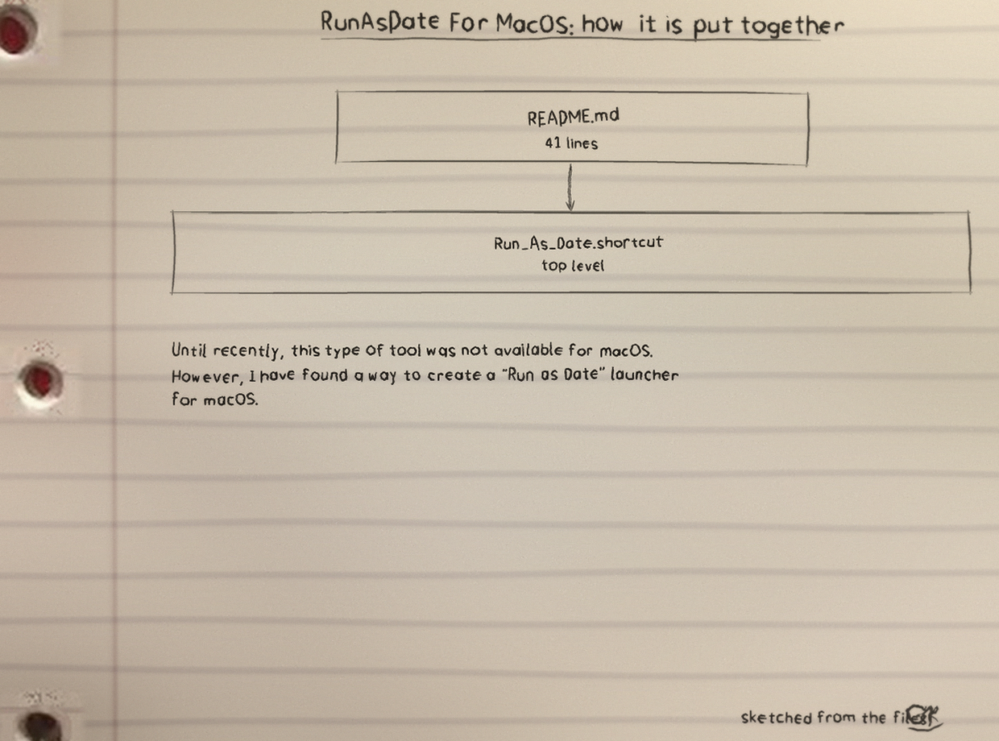
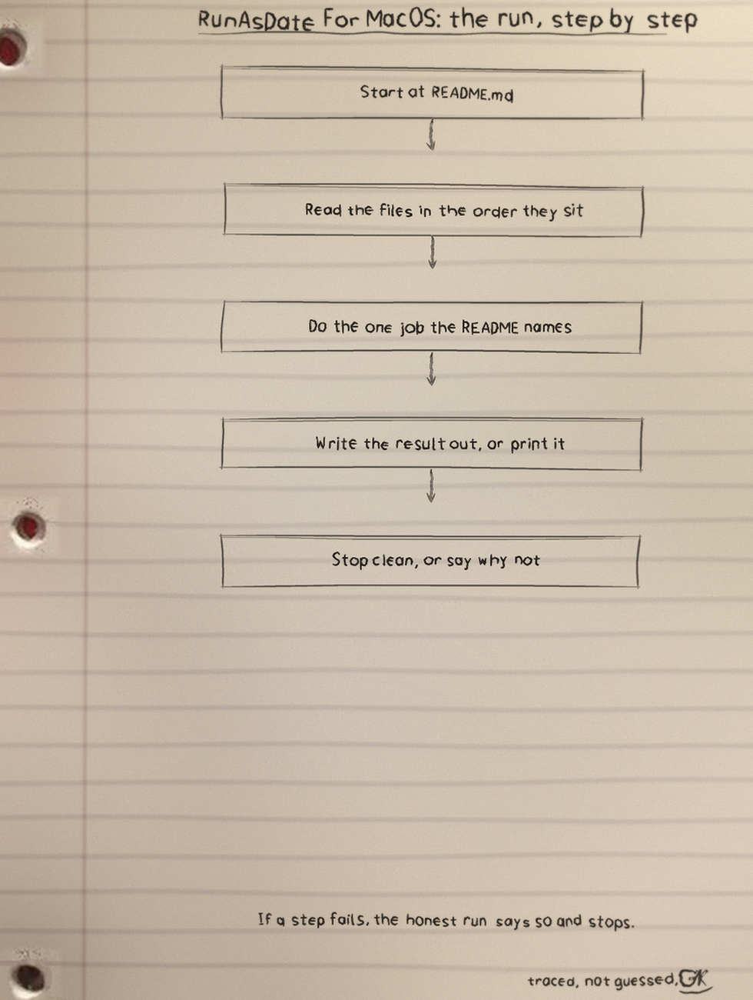
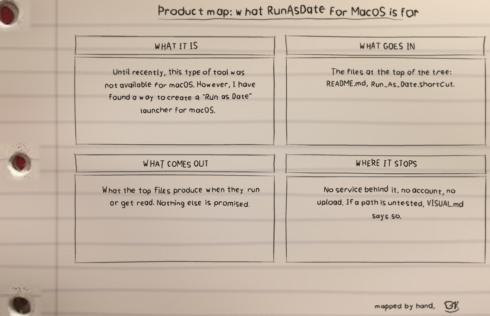

Until recently, this type of tool was not available for macOS. However, I have found a way to create a "Run as Date" launcher for macOS.
What it is
RunAsDate For MacOS: 2 files, 41 counted lines across Markdown 41. One job, done in the open, in files you can read.
The biggest piece
README.md carries the most
lines. If the project grows, that file is where the growth
lands first, for better or worse.
The honest gap
No test files yet. That is the honest gap, and the roadmap in the visuals folder says what the first one should cover.
Run it
The repo README has the exact commands for this one. The shape is the shape for most of my projects: clone it, read the top file first so you know what will happen, then run it on something you do not mind breaking.
$ git clone https://github.com/Epsilon0xCell/RunAsDate-for-MacOS.git
$ cd RunAsDate-for-MacOS
The code, as it sits in the repo
From README.md, line 1 on. I did
not tidy it for the page. What you see is what the file has.
# RunAsDate-for-MacOS
A "Run as Date" launcher is a tool that allows you to run an application on a specific date and time, rather than the current date and time. This can be useful for testing software that has expiration dates, or for running older versions of applications that are no longer supported on the current operating system.
Until recently, this type of tool was not available for macOS. However, I have found a way to create a "Run as Date" launcher for macOS.
# The solution
When trying to solve the "Run as Date" problem on macOS, I first researched existing solutions and found that there were no readily available tools for this specific task. However, I knew that it was possible to change the system date and time using Terminal commands, so I began experimenting with different command line utilities to see if I could find a way to automate the process.
After some experimentation, I discovered that I could use a combination of the "date" command and the "open" command to change the date and launch an application. I created a simple shell script that included these commands and was able to successfully run an application on a specific date.
Next, I wanted to make this process more user-friendly and accessible to others, so I decided to convert the shell script into an Apple Shortcut. I used the "Run Script" action in the Shortcuts app to run the shell script, and added additional actions to make the shortcut more functional and intuitive to use.
Overall, it was a process of experimentation and problem solving, but I was able to find a way to automate the "Run as Date" process using Terminal and shell script, and then convert it into an Apple Shortcut for easy use.
# Instructions ( What you need to do ? )
To use the Apple Shortcut, follow these steps:
1. Download the shortcut from the github repository.
2. Double click and add the shortcut to your library.
<img width="427" alt="Screenshot 2023-01-24 at 10 42 32 AM" src="https://user-images.githubusercontent.com/71588718/214216981-c59d1624-3508-4378-be32-3eaf514620a8.png">The files that matter
| File | Lines |
|---|---|
README.md | 41 |
Run_As_Date.shortcut | 0 |
Names doing the work: no named functions in the snapshot.
Drawn by hand
I sketch my projects on notebook paper so I have to understand them well enough to draw them. The full set, with the counts and how they were counted, is the RunAsDate-for-MacOS-Visuals folder in the repo. Nothing is drawn over the binder holes. That is a rule, not a style.


